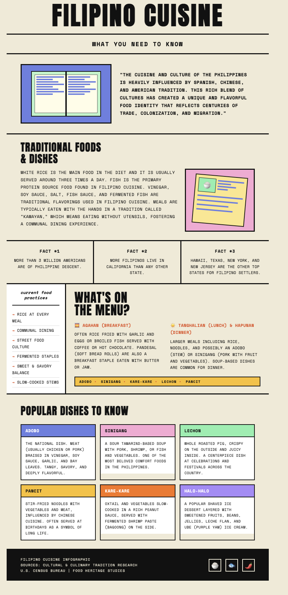

In the Philippines, food is far more than what’s on the plate. It is the primary language through which love, belonging, and identity are expressed. To feed someone is to care for them. Preparing a meal for someone is one of the most universal expressions of care and affection. A home-cooked meal embodies not only flavor but also memories, affection, and a sense of belonging. Recipes passed through generations link us to our ancestors, preserving identity and tradition with each dish. Feeding someone is an expression of affection, and sharing a meal signifies inviting them into your life. Angelika, a junior at the University of North Carolina at Chapel Hill, is the daughter of Filipino immigrants, and her relationship with food symbolizes a wider cultural phenomenon: the function of cuisine as a medium for identity, memory, and intergenerational connection.
In her household, food served not only as nourishment but also as a cultural practice that actively preserved and conveyed values, traditions, and family connections. Dishes like sinigang, adobo, and lechon possess unique cultural importance, symbolizing occasions, celebrating milestones, and shaping family routines in ways that go beyond the act of eating itself.
As a first-generation college student living away from home, Angelika’s connection to Filipino cuisine has gained significant meaning. Preparing her family’s dishes serves as an act of cultural preservation, ensuring continuity with her roots and establishing a connection to the generations of women who prepared dishes before her. In this context, food serves as an anchor of belonging, an intangible connection to community and heritage when geographical distance creates separation.
For Angelika, Filipino cuisine is not merely a representation of her origins; it is an ongoing practice that sustains her cultural identity, pays homage to her family, and reinforces her sense of self. Her story demonstrates the lasting influence of food as a cultural tradition, extending beyond the dinner table and addressing the fundamental human desire to remain connected to one’s heritage. Angelika is dedicated to preserving the flavors, histories, and values embedded in Filipino cuisine for future generations.
This infographic highlights key elements of Filipino cuisine, including popular dishes, cultural influences, and the role of food in community and tradition.
